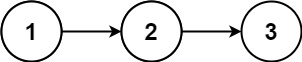

382. 链表随机节点
水塘抽样：第 1 个结点先当答案，扫到第 i 个时以 1/i 概率替换；扫完每个结点被选概率都是 1/n。
思路
- 进阶要求「长度未知、O(1) 空间」→ 用水塘抽样，链表只扫一遍。
ans从头结点起；第i个结点掷骰rnd.nextInt(i) == 0（概率1/i）就替换它。- 归纳可证扫完
n个后每个结点概率都是1/n：第i个最终留下的概率 = 各步都不被换。 - 每次
getRandom独立重新扫一遍链表，随机数发生器共用。
图解
最优解
1import java.util.*;2 3class Solution {4 private final ListNode head;5 private final Random rnd = new Random();6 7 public Solution(ListNode head) {8 this.head = head;9 }10 11 public int getRandom() {12 // 水塘抽样：扫到第 i 个结点时以 1/i 概率选它；扫完后每个结点被选概率都是 1/n13 int ans = head.val;14 ListNode p = head.next;15 for (int i = 2; p != null; i++, p = p.next) {16 if (rnd.nextInt(i) == 0) ans = p.val;17 }18 return ans;19 }20}题目
给你一个单链表，随机选择链表的一个节点，并返回相应的节点值。每个节点 被选中的概率一样 。
实现 Solution 类：
Solution(ListNode head)使用整数数组初始化对象。int getRandom()从链表中随机选择一个节点并返回该节点的值。链表中所有节点被选中的概率相等。
示例：

输入 ["Solution", "getRandom", "getRandom", "getRandom", "getRandom", "getRandom"] [[[1, 2, 3]], [], [], [], [], []] 输出 [null, 1, 3, 2, 2, 3] 解释 Solution solution = new Solution([1, 2, 3]); solution.getRandom(); // 返回 1 solution.getRandom(); // 返回 3 solution.getRandom(); // 返回 2 solution.getRandom(); // 返回 2 solution.getRandom(); // 返回 3 // getRandom() 方法应随机返回 1、2、3中的一个，每个元素被返回的概率相等。
提示：
- 链表中的节点数在范围
[1, 104]内 -104 <= Node.val <= 104- 至多调用
getRandom方法104次
进阶：
- 如果链表非常大且长度未知，该怎么处理？
- 你能否在不使用额外空间的情况下解决此问题？
题面取自力扣当前版本。
数据快照 2026-11-04。题面版权归力扣所有，本站点仅供本人学习使用，请勿对外发布。